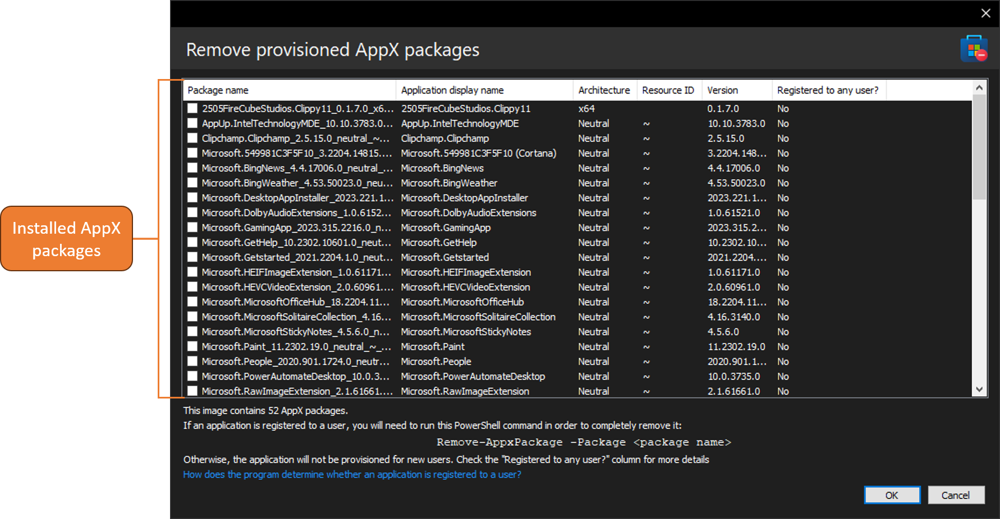

Removing provisioned AppX packages

With DISMTools you can remove provisioned AppX packages by using a checked list. This action can be accessed by clicking Commands > App packages > Remove provisioning for app package...
This action will keep affected applications from being registered to new users, but they will still be registered to existing users.
Target OS support
This action is supported on the following platforms:
| Platform | Supported? |
|---|---|
| Windows 7/Server 2008 R2 | ❌ |
| Windows 8/Server 2012 | ✔ |
| Windows 8.1/Server 2012 R2 | ✔ |
| Windows 10/Server 2016/2019/2022 | ✔ |
| Windows 11/Server vNext | ✔ |
NOTE: if you are removing AppX packages from a Windows Server Core installation, the Desktop Experience feature needs to be installed. Do not remove the Desktop Experience feature before removing the desired AppX packages.
This action is supported on DISMTools 0.2 and newer
Usage
Simply specify the applications you want to remove provisioning for, and then click OK.
Did you know?
- You can right-click a package in the list to open its directory, or to view its logo assets

Full removal of an application
To fully remove an application, you need to use PowerShell:
- Open PowerShell as an administrator
- Type the following command:
Get-AppxPackage -Name <pkgName> | Remove-AppxPackage(where<pkgName>is the name of the desired AppX package to remove)
Questions
Q: How does the program determine whether an application is registered to a user?
A: The program determines the registration status of an application by detecting the amount of .pckgdep files in the <mountPath>\ProgramData\Microsoft\Windows\AppRepository\Packages\<pkgName> folder (where <mountPath> is the mount directory of a Windows image or the local disk of an active installation, and <pkgName> being the name of the application package). You can't access the AppRepository folder in Windows Explorer, but you can access its subdirectories by using 3rd party tools.
When accessing this directory, you'll see .pckgdep files whose names begin with S-1-.... This is an SID, or a user account identifier. You can view more information about SIDs here, or detect if you have been assigned a given SID by opening a command prompt window and typing wmic useraccount get name,sid.